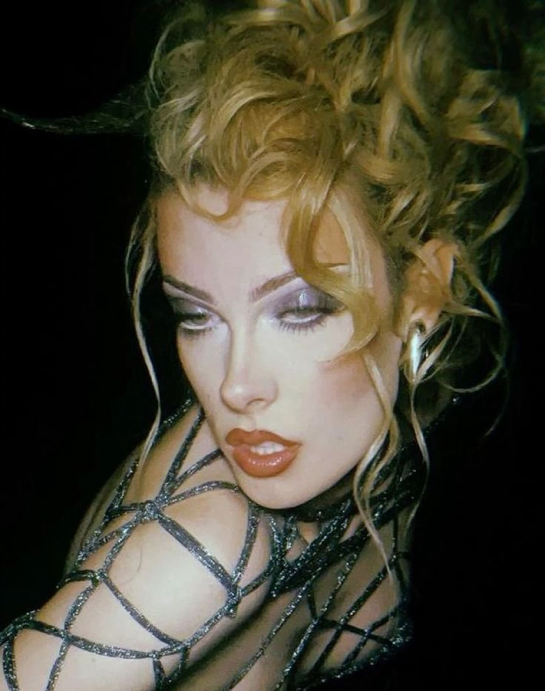
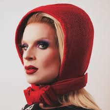
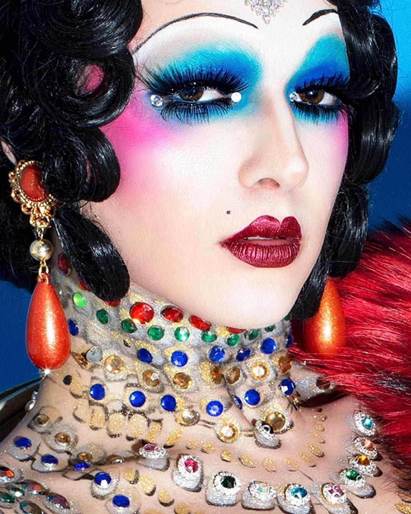
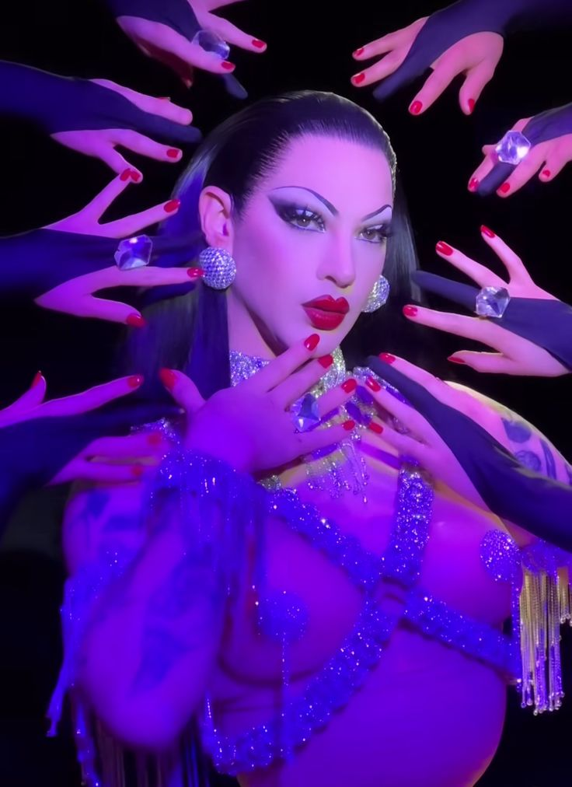
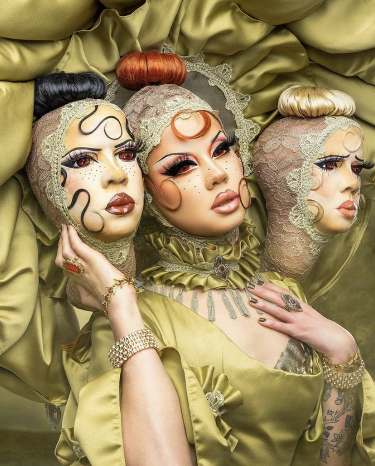

Drag makeup refers to the style of makeup used by drag performers to create bold, expressive, and often theatrical looks. It emphasizes features such as the eyes, lips, jawline, and cheekbones through techniques like contouring, bold eyeshadows, and dramatic lashes. More than just cosmetic artistry, drag makeup is a form of self-expression. Often used in a way to transform oneself, and explore gender expression while amplifying performance and self-presentation.
Gigi Goode is a drag performer who takes a natural and soft approach too drag makeup. Rather than leaning into exaggeration, she opts for clean lines, neutral tones, and subtle enhancement. Her facial expression, and the way in which she is photographed tends to be sultry and controlled, depicting how drag can also embody restraint.
Katya adopts the persona of a Russian women, and uses the color red to showcase this choice. Her approach blends satire, camp, and cultural exaggeration, effectively creating a persona that is comedic and striking visually.
Raja Gemini, one of the earliest winners of RuPaul’s Drag Race, is recognized for her high-fashion sensibility and makeup artistry. Her looks often draw inspiration from editorial photography, avant-garde styling, and visual art, positioning her as a major influence on the fashion-forward direction of modern drag.
Violet Chachki gravitates toward vintage glamour, drawing on mid-century silhouettes, corsetry, and dramatic makeup inspired by burlesque and old Hollywood. Her precision-focused looks emphasize elongated eyeliner, sharp contour, and a sculpted, hyper-feminine aesthetic.
Willow Pill is known for her surreal, whimsical approach to drag, blending softness with dark humor. In her Drag Race finale look—her iconic “I Hate People” outfit—she appeared in an oversized pink mushroom-inspired garment with matching makeup that exaggerated round, doll-like eyes, pastel blush, and a softly blurred lip. The look balanced cuteness with discomfort, using makeup to heighten the uncanny, sickly-sweet persona central to her drag. Her finale presentation emphasized how drag makeup can create characters that are emotionally complex, ironic, and deeply personal.
➤
➤